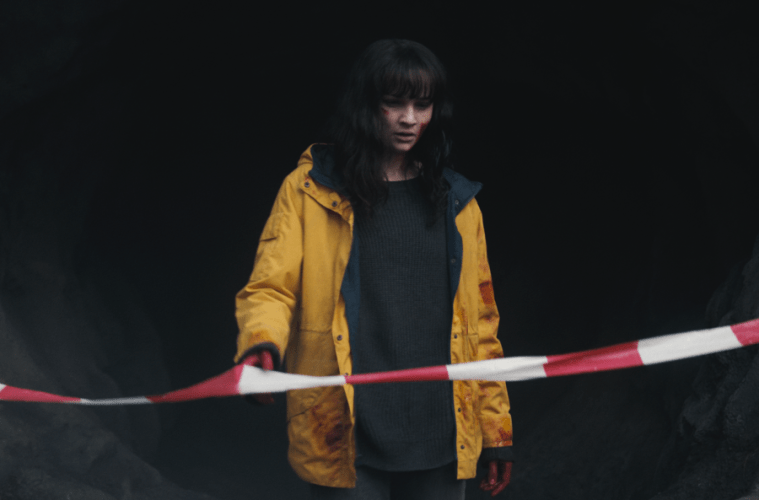

Dark'ın 3. Sezon Değerlendirmesi
Hande Demirci 09/07/2020
Dizinin izleyicisine sürekli olarak hatırlattığı söylemlerden biri, Newton’a ait bildiğimiz her şey bir su damlasından ibaretken, bilmediklerimizin ise koca bir okyanus olduğuna dair ifadeleri ve bence üçüncü sezonu izlerken bu sözlerin çerçevesinden bakabilmek çok önemli. Zira, bir şeylerin çözümüne vardığımıza dair hislerimizin su yüzüne çıktığı her an dizi, bakış açısını daha da genişletiyor ve özetle bize bildiğimiz her şeyin aslında küçücük bir su damlasından ibaret olduğunu hatırlatıyor. Tıpkı, Mikkel’in evine hiçbir şey yaşanmamış gibi dönebileceğini, Charlotte’ın bir çözüme varabileceğini ve daha nicelerini düşündüğümüzde, hatta her şeyi rayına oturtmak konusunda Jonas’a güvendiğimizde olduğu gibi… Halbuki dizi, tüm bu anlattıklarıyla, bizleri hep sandığımız gibi belirli bir başlangıçtan son noktasına götürmeyi değil; aslında hikâyenin damarlarının oluşturduğu büyük resmi tarif etmeyi amaçlıyor. Başından beri, özgür iradenin varlığını, verdiğimiz kararların vardığı sonuçlar üzerinden Schopenhauer’in teorileri ışığında inceleyen dizi, son sezonunda karakterlerini ve dolayısıyla izleyicisini adeta bir deney faresi gibi dur durak bilmeden koşturduğu küçük silindir içerisinde sıkışmış hissettiriyor. Tıpkı, herkesi kurtarmaya odaklanan Jonas gibi, Jonas’ın hiç var olmadığı bir dünyadan gelen Martha da yaşananları önlemek amacıyla hareket ettiği sürece, farklı rotalar izlese de, Ariadne’nin ipliği mantığını takip edercesine zamanın sonsuz döngüsü içerisinde tekrara düşmekten öteye gidemiyor. Sezon boyunca farklı olasılıkların rehberliğinde ortaya çıkan bu sonsuz tekrarların döngüsünü izlemek, bir şeyleri anladığımız her an, kara delikte daha dibe çekildiğimizde olduğu gibi, geçmiş sezonlara kıyasla daha yorucu olabiliyor. Çünkü aslında, öğrendiklerimizi birleştirmeye çalışıp kaybettiklerimizi geri döndürme yolunda kullanma çabasından sıyrılarak bildiklerimizden ötesini, yani içine sıkıştığımız silindirin dışındakileri, laboratuvardakileri ve hatta bütün deneyi düşünmeye başlamamızı talep ediyor.